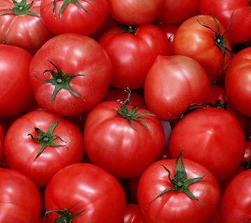

中华全国供销合作总社济南果品研究院是1980年经国家编制委员会批准成立的事业单位，是专业从事果蔬采后工程技术研究的国家级科研机构。
先后主持承担了“六五”~“十二五”国家科技支撑项目、国家高新技术产业化项目和农业科技成果转化资金项目、国家标准制修订等项目300多项，获得国家和省部级科技奖励60多项。走产“学研结合、科工贸一体化”发展道路，同国内外2000多家果蔬加工、保鲜和食用菌企业建立了友好合作关系。拥有行业技术服务平台二十多个，包括国家i-OID统一标识体系果蔬行业注册中心、《中国果菜》杂志、果蔬及制品流通与安全控制产业技术创新战略联盟、中华全国供销合作总社济南果蔬及制品质量监督检验测试中心、中国果品流通协会贮藏加工专业委员会、国际果汁保护协会（SGF）中国办公室、供销总社行业特有工种职业技能鉴定站、供销总社果蔬冷链物流工程技术研究中心、山东省食品科学技术学会、北京中合金诺认证中心济南办事处、国家苹果工程中心采后实验室等。
九十年代中德两国政府共同投资8000多万元在我院建成了“中国果蔬贮藏加工技术研究中心”，包括加工中试车间、中试气调库、部级质检中心。
